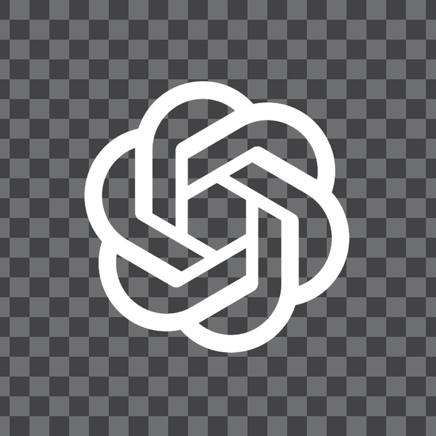

Dit is een spel die ik maak met een paar vrienden online.
Ik kan niet zo veel van de code taal op roblox (lua)
maar zou het wel graag willen leren.
Mijn team bestaat uit 2 devs, 1 vfx artist en 1 animator.
Zelf manage ik de game en zorg ik dat
het goed word geadvertised,
Het is lastig om er alleen aan te werken
omdat ik niet lua kan scripten.
Dus moet ik meestal chat GPT om hulp vragen als niemand
aanwezig is om te helpen.
